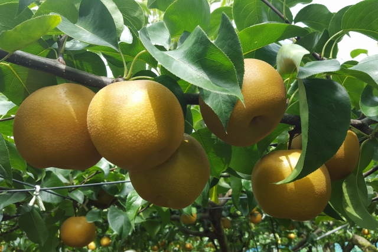

旬情報
豊作！ジャンボ梨

梨の季節がやってきました。高温多湿で水はけのよい最適な土壌も相まって、大府の梨は味が抜群。幸水、豊水を
はじめ、特産品として有名なのがジャンボ梨・新高（にいたか）。
重さが1キログラムを超え、果肉が柔らかく、ほおばると、ジューシーで爽やかな甘みが口の中に広がります。
梨の季節がやってきました。高温多湿で水はけのよい最適な土壌も相まって、大府の梨は味が抜群。幸水、豊水を
はじめ、特産品として有名なのがジャンボ梨・新高（にいたか）。
重さが1キログラムを超え、果肉が柔らかく、ほおばると、ジューシーで爽やかな甘みが口の中に広がります。